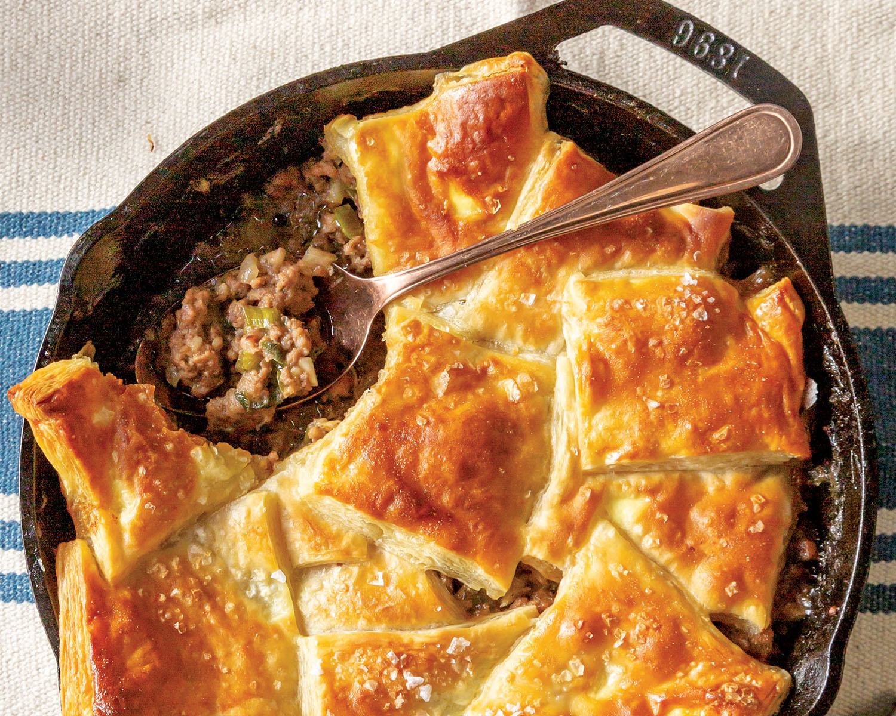

Natchitoches Pot Pie

Description
What is sure to be a dinnertime favorite, this pot pie is best served straight out of the oven!
Ingredients
Makes 1 (10-Inch) Pie.
- 1 pound ground beef
- 1 pound ground pork
- ½ cup chopped green onion
- ½ cup diced sweet onion
- 1 green bell pepper, diced
- 4 cloves garlic, minced
- ⅓ cup all-purpose flour
- 2 teaspoons Creole seasoning
- 1 teaspoon kosher salt
- ¼ teaspoon ground black pepper
- ⅛ teaspoon crushed red pepper
- 1 cup beef broth
- 1 tablespoon Worcestershire sauce
- 1 teaspoon hot sauce
- ½ (17.3-ounce) package frozen puff pastry (1 sheet), thawed
- 1 large egg, lightly beaten
- Flaked sea salt
Steps: Making the dish
- Preheat oven to 400°.
- In a 10-inch cast-iron skillet, cook ground beef and ground pork over medium-high heat, breaking up meat, until browned and crumbled, 15 to 20 minutes. Stir in green onion, sweet onion, bell pepper, and garlic. Cook, stirring occasionally, until vegetables are softened, about 10 minutes.
- Stir flour, Creole seasoning, kosher salt, black pepper, and crushed red pepper into meat mixture; cook, stirring frequently, for 1 minute. Gradually stir in broth, Worcestershire, and hot sauce. Cook until thickened, 5 to 7 minutes.
- Cut puff pastry sheet into 9 squares. Starting at edge and working toward center, shingle puff pastry on top of skillet. Brush with egg, and sprinkle with sea salt.
- Bake until golden brown and puffed, 15 to 20 minutes. Let cool slightly before serving.
Thank you to Louisiana Cookin' for the recipe!